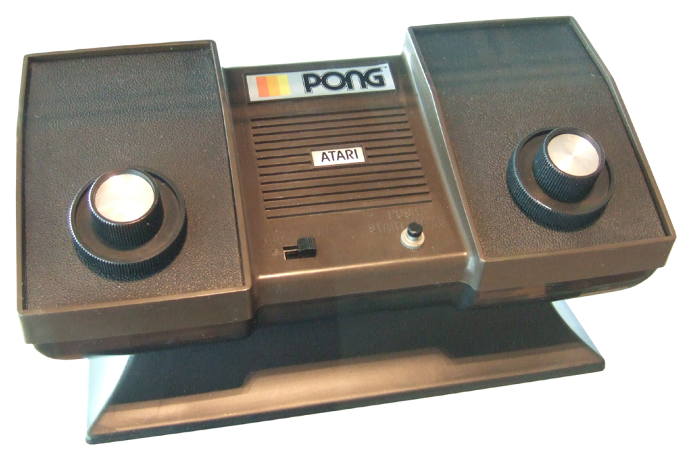

Atari Pong
Pong fue una consola creada por Atari en 1975, y la segunda videoconsola de la historia. Fue la versión doméstica de la arcade PONG también lanzada por atari unos años antes. No llevaba cartuchos, sino que tenía solo un juego, el Pong, imitando el tenis de mesa de Magnavox Odyssey. No tardaron en hacerse copias del Pong, insertados en la circuitería de los televisores o como juegos para otras consolas. Después de hacer grandes inversiones intentando transformar una máquina recreativa de moneda en una consola doméstica, negociaron con Sears. Después de esto, Sears, cadena comercial en América, quedó asombrada con esta consola de Atari, y decidió comprarla, quedando así con los derechos de la original Pong. Tras esto, sears comenzó a lanzar versiones licenciadas de pong que se conocieron como Tele-Games bajo la marca Sears.
